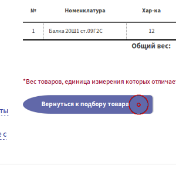
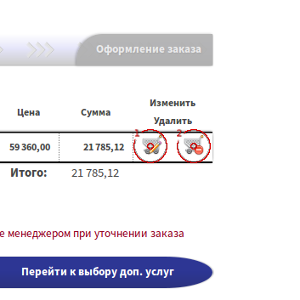
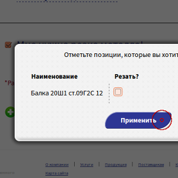

Уважаемый клиент, благодарим вас за то, что вы выбрали «Тримет» поставщиком металлопроката! Мы искренне надеемся, что у вас останется положительный опыт от работы с нами.
Для того, чтобы оформить заказ на сайте, достаточно совершить лишь несколько простых действий.
Наведите указатель мыши на номенклатурную группу из меню слева и нажмите левой кнопкой мыши.

На месте меню откроется список параметров, по которым можно отфильтровать список, появившийся по центру. Чтобы применить фильтры нажмите левой кнопкой мыши на кнопку "Выбрать" под параметрами или же на ссылку во всплывающей подсказке.


! Если поле для флажка окрашено в серый и не отмечается, значение парметра отсутствует для отмеченных параметров другой подгруппы !
По центру расположен список номенклатуры, соответствующий выбранной группе и параметрам. Чтобы увидеть подробную информацию по кокретной позиции, расчитать стоимость и положить в корзину, нажмите левой кнопкой мыши на кнопку "Подробнее".
Выбранная позиция развернётся в плашку, на которой можно увидеть информацию о доступных размерах1, информацию о ценах2, а так же открыть окно расчета потребности3.
Вы можете выбрать нужный размер из выпадающего списка, цена при этом может измениться. Чтобы продолжить нажмите кнопку "Расчитать"
Откроется окно расчёта потребности по выбранной номенклатуре и размеру. В этом окне можно задать вес или количество штук1, узнать итоговую стоимость по позиции2 и добавить её в корзину3.
! Для немерной номенклатуры поле "Штуки" будет заблокировано !
После того, как вы введёте нужное количество, нажмите кнопку "В корзину". Всплывающее уведомление справа от верхнего меню сообщит о том, что товар добавлен в корзину

Повторите действия, указанные выше, для всех требуемых позиций, чтобы заполнить корзину.
Чтобы просмотреть список выбранной номенклатуры1, изменить его2 или продолжить оформленние заказа3, нажмите на кнопку "Корзина"
Вы увидете перед собой корзину покупок. Чтобы вернуться к списку выбора номенклатуры, воспользуйтесь кнопкой "Вернуться к подбору товара" или нажмите на пункт левого меню "Добавить товар".

! Нажатие кнопки "Купить онлайн" очистит корзину !
Для изменения количества товара нажмите на изображение тележки с карандашом1. Появится всплывающее окно, аналогичное окну расчёта потребности.
Чтобы удалить позицию из корзины, нажмите нна изображение тележки с крестиком2.

Если вам нужна резка металла или доставка по городу и межгороду - перейдите на вкладку выбора услуг. Для это нажмите на кнопку "Перейти к выбору доп. услуг" или на заголовок "Выбор доп. услуг"
! Если дополнительные услуги не нужны, то можо сразу перейти к финальной стадии оформления заказа, описаной нижу по тексту !
Чтобы оформить доставку, нажмите на "Мне нужна доставка"1; нажмите на "Мне нужна резка металла"2 для заказа резки.
При оформлении доставки появится форма ввода информации о доставке. На этой форме нужно выбрать между городом и межгородом1, район (или город) доставки2, ввести точный адрес3, узнать стоимость доставки4 и предлагаемый транспорт5
Если вашего района или города нет в списке - напишите его в поле точного адреса, менеджер расчитает и сообщит стоимость доставки после оформления заказа.
Чтобы добавить номенклатурную позицию на резку, нажмите ссылку "Добавить позицию"
В появившемся всплывающем окне отметьте позиции, которые надо резать и нажмите на кнопку применить

! Резку можно применить только для мерных характеристик номенклатуры !
На страницу будут добавлены плашки, соответствующие выбранным позициям.
В этих плашках укажите длину1 и количество2 отрезов этой длины. Чтобы добавить ещё оди рез нажмите на кнопку "Добавить рез"3. Когда вы закончите, нажмите на кнопку "Рассчитать"4. Чтобы отменить выбор позиции для резки, нажмите крестик в верхнем правом углу плашки5.
! Нельзя указать длину реза большую размера характеристики !
После того как вы нажмёте на кнопку "Рассчитать", программа покажет оптимальный раскрой на основе введенных данныхю. Если вы хотите предоставить свой вариант раскроя или, чтобы сам менеджер сделал раскрой, - напишите об этом в комментарии к заказу на следующем шаге.
Цена резки расчитывается менеджером отдельно и может как быть добавлена в счет, так и выписана отдельным счетом.
Перейти на оформление заказа можно нажава на кнопку "Перейти к оформлеиню заказа", на заголовок "Оформление заказа" или же на пункт левого меню "Оформить заказ".

На вкладке "Оформление заказа" введите свои контактные данные1 и отправьте заказ нам, нажав кнопку "Оформить"2.
Если вы являетесь зарегистрированным контрагентом и имеете доступ к личному кабинету, то вы можете оформить заказ от лица контрагента. Для этого нажмите на кнопку "Я зарегистрированный контрагент" и введите свой логин и пароль.
После этого вы сможете выбрать котрагента, от лица которого будет оформлен заказ.